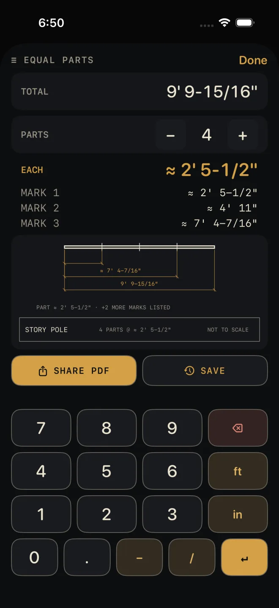

Equal parts
The ≡ equal parts key divides a length into a number of equal parts and lists every mark as a running measurement from one end — a story pole. Hook the tape once and make every mark without moving it. The division is exact; nothing is rounded along the way.
Step by step
 1
1

2 3 4 5- On the Dimensional Calculator, tap ≡ equal parts. If the calculator is holding an answer that is a length, the sheet opens with it already in TOTAL. A number you are still typing does not carry over.
- To set or change TOTAL, type the length on the sheet's own keypad — feet, inches, the dash key before a fraction — and tap ↵. While you type, the number shows in gold; it takes effect when you tap ↵.
- Set PARTS with − and +. It starts at 2 and goes up to 99. The shot has it at 4.
- Read the results. They update as soon as the total or the part count changes. With a TOTAL of 9' 9-15/16" in 4 parts, EACH is ≈ 2' 5-1/2" and the three marks are ≈ 2' 5-1/2", ≈ 4' 11" and ≈ 7' 4-7/16".
- Tap Done to go back to the calculator.
Reading the results
- EACH — the length of one part: the total divided by the part count.
- MARK 1, MARK 2… — where to mark, each one measured from the same end. Mark 1 is one part along, mark 2 is two parts along, and so on. There is always one mark fewer than there are parts, because the last part ends at the end of the piece.
- The drawing under the list is the story pole: the full length with every mark ticked on it. See Drawings.
- Lengths show at the calculator's current fraction setting. A value that does not land exactly on that fraction is marked ≈. The marks are still worked out from the exact part, not from the rounded one, so they do not drift along the piece.
Equal parts is free. The two buttons under the drawing are Pro: SHARE PDF
prints the total, each part, the marks and the story pole; SAVE puts the result in
History. Without Pro they read PDF — PRO and SAVE — PRO. The
PDF lists the first 14 marks as rows and says how many more there are; the full list stays on screen.
Common mistakes
- Counting marks instead of parts. Four equal parts take three marks. PARTS is the number of spaces.
- Typing a total and not tapping ↵. Until you do, the results are still for the old total.
- Dividing the wrong length. This divides the whole TOTAL and takes nothing off for the thickness of what goes on the marks. If you are spacing between posts or stiles, work out the length you mean to divide on the calculator first, then open the sheet. For balusters, use Baluster Spacing.
- Moving the tape between marks. The marks are running measurements from one end. Stepping off EACH over and over adds up every small error.
If it doesn't work
- No results show. TOTAL reads "—". Type a length and tap ↵.
- The total did not carry over from the calculator. Only a length carries. An area, a plain number, or a number still being typed does not.
- A red line appears above the keypad. The entry could not be read as a dimension. Backspace and re-type it — see Entering feet, inches and fractions.
Related
- Diagonal — the key beside it
- The Dimensional Calculator
- Baluster Spacing
- Cut sheets and templates
- Saving and history